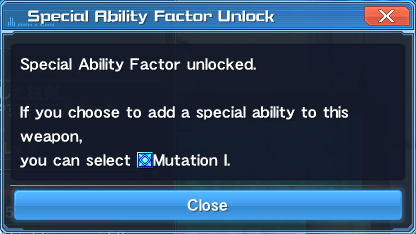
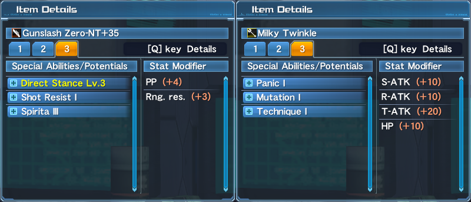
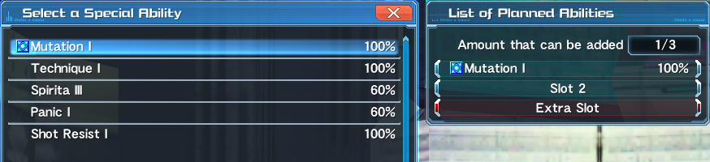
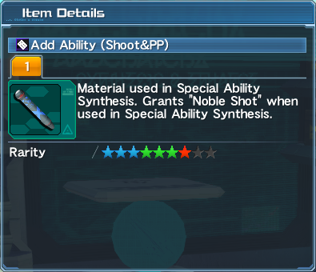
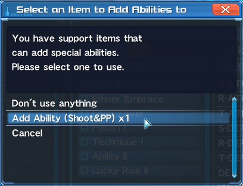
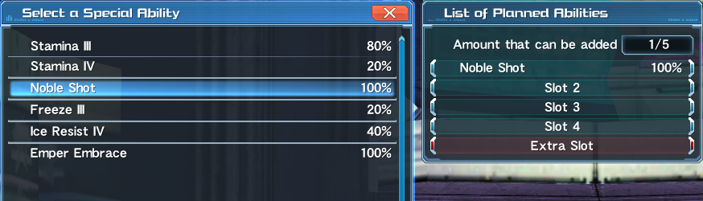

As stated earlier, dropped equipment can have an affix attached to them. In addition to this, most affixes have a specific quest or mob that they can drop from.
"Okay, I got the affix I wanted, but how can I place this on my equipment of choice?" you might ask. Simply put, placing an affix can be done either via Transfer, Synthesis, or through the use of Support Items.
Special Ability Transfer is done by taking and placing an already-existing affix from the fodder to the base.
This can be done in multiple ways:
Certain affixes require only one copy for a chance of transfer while others require at least two or more. The rate of transfer is maxed at three copies of the affix, so using more than three would just be a waste.
Fevers are a group of affixes whose transfer only requires one copy to achieve a 100% transfer rate. These affixes usually drop from Special or Seasonal Variants of Rappies, Nyaus, or as an End of Quest Drop.
Emper Embrace and affixes ending in -Fever or -Smile also belong to this group.
Receptors are a kind of affix that boosts the transfer rate of another affix to 100% despite having only one copy. Great, right? Though the receptors themselves can not be transferred, they make transferring difficult and expensive affixes quite easier.
S-Class Special Abilities are a special type of Special Ability (that's two special right there) that can only drop from certain quests or as Special Ability Factors (SAFs) and can only be placed on weapons that can support them. These only need one copy for a 100% transfer rate, and are not affected by Upslot Penalties (fsugoi!). Details on these will be discussed later on.
In essence, SSAs can not fail in any affixing process and will not be lost unless you accidentally not select them.
Special Ability Synthesis, unlike transfer, uses two or more component affixes to create a different affix. Synthesis can also be boosted by some Special Abilities.
A few affixes can only be placed through the use of “Add Ability X” items from various Scratches or through the use of Special Ability Factors (SAFs). SAFs are obtained by grinding a New-Type Weapon to +35, with each weapon having different SAF associated with it.
These affixes are at base 100% affix rate but are still affected by upslot penalties.
     